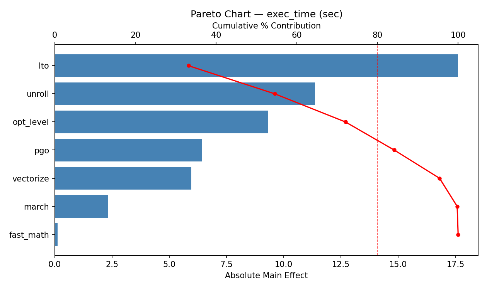
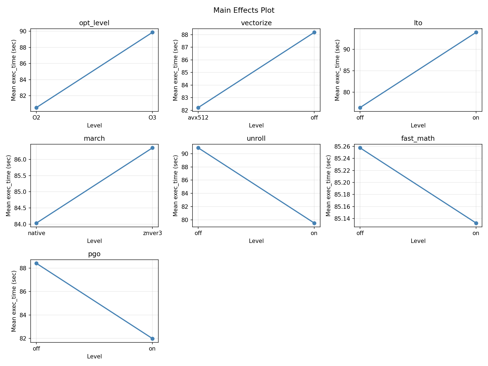
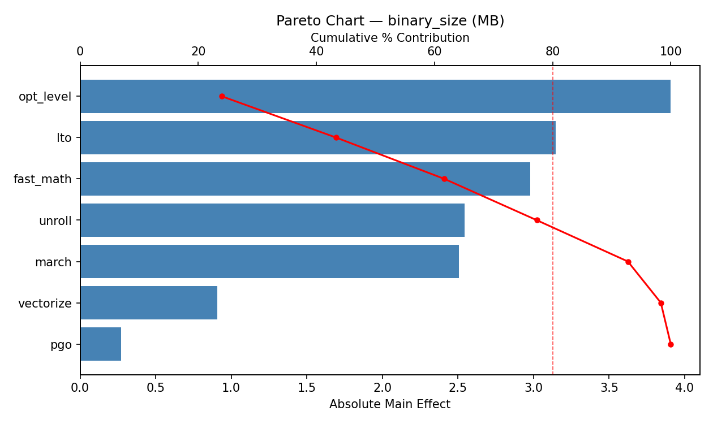
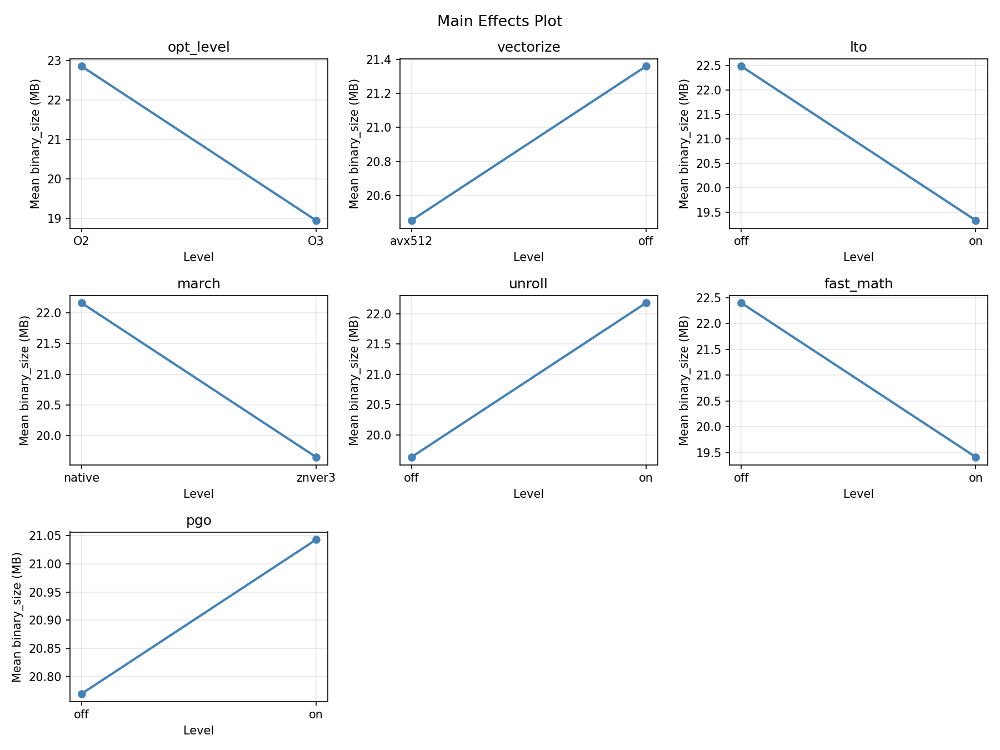

Experimental Setup
Factors
| Factor | Levels | Type | Unit |
|---|
opt_level | O2, O3 | categorical | |
vectorize | off, avx512 | categorical | |
lto | off, on | categorical | |
march | native, znver3 | categorical | |
unroll | off, on | categorical | |
fast_math | off, on | categorical | |
pgo | off, on | categorical | |
Fixed: none
Responses
| Response | Direction | Unit |
|---|
exec_time | ↑ maximize | sec |
binary_size | ↑ maximize | MB |
Experimental Matrix
The Plackett-Burman Design produces 8 runs. Each row is one experiment with specific factor settings.
| Run | opt_level | vectorize | lto | march | unroll | fast_math | pgo |
|---|
| 1 | O3 | avx512 | on | native | off | off | off |
| 2 | O2 | off | on | znver3 | off | off | on |
| 3 | O2 | avx512 | off | znver3 | off | on | off |
| 4 | O3 | avx512 | on | znver3 | on | on | on |
| 5 | O2 | avx512 | off | native | on | off | on |
| 6 | O3 | off | off | znver3 | on | off | off |
| 7 | O2 | off | on | native | on | on | off |
| 8 | O3 | off | off | native | off | on | on |
How to Run
$ python doe.py info --config use_cases/13_compiler_flags/config.json
$ python doe.py generate --config use_cases/13_compiler_flags/config.json --output results/run.sh --seed 42
$ bash results/run.sh
$ python doe.py analyze --config use_cases/13_compiler_flags/config.json
$ python doe.py optimize --config use_cases/13_compiler_flags/config.json
$ python doe.py report --config use_cases/13_compiler_flags/config.json --output report.html
Analysis Results
Generated from actual experiment runs.
Response: exec_time
Pareto Chart

Main Effects Plot

Response: binary_size
Pareto Chart

Main Effects Plot

Full Analysis Output
=== Main Effects: exec_time ===
Factor Effect Std Error % Contribution
--------------------------------------------------------------
march -15.0650 4.6622 25.9%
opt_level -11.3700 4.6622 19.5%
fast_math -9.3150 4.6622 16.0%
lto -8.9800 4.6622 15.4%
vectorize 8.5100 4.6622 14.6%
unroll 2.6750 4.6622 4.6%
pgo -2.3250 4.6622 4.0%
=== Interaction Effects: exec_time ===
Factor A Factor B Interaction % Contribution
------------------------------------------------------------------------
opt_level unroll -15.0650 8.6%
vectorize fast_math 15.0650 8.6%
lto pgo -15.0650 8.6%
vectorize lto 11.3700 6.5%
march unroll -11.3700 6.5%
fast_math pgo -11.3700 6.5%
opt_level pgo -9.3150 5.3%
vectorize march 9.3150 5.3%
lto unroll -9.3150 5.3%
opt_level vectorize 8.9800 5.1%
march pgo -8.9800 5.1%
unroll fast_math -8.9800 5.1%
opt_level lto -8.5100 4.9%
march fast_math -8.5100 4.9%
unroll pgo -8.5100 4.9%
opt_level march 2.6750 1.5%
vectorize pgo -2.6750 1.5%
lto fast_math 2.6750 1.5%
opt_level fast_math -2.3250 1.3%
vectorize unroll 2.3250 1.3%
lto march -2.3250 1.3%
=== Summary Statistics: exec_time ===
opt_level:
Level N Mean Std Min Max
------------------------------------------------------------
O2 4 90.8800 11.0119 78.7500 103.4800
O3 4 79.5100 14.0819 58.7500 88.6300
vectorize:
Level N Mean Std Min Max
------------------------------------------------------------
avx512 4 80.9400 18.3360 58.7500 103.4800
off 4 89.4500 4.6107 85.2700 96.0200
lto:
Level N Mean Std Min Max
------------------------------------------------------------
off 4 89.6850 10.2347 78.7500 103.4800
on 4 80.7050 15.7238 58.7500 96.0200
march:
Level N Mean Std Min Max
------------------------------------------------------------
native 4 92.7275 8.9852 82.7800 103.4800
znver3 4 77.6625 13.1800 58.7500 87.8800
unroll:
Level N Mean Std Min Max
------------------------------------------------------------
off 4 83.8575 4.1641 78.7500 88.6300
on 4 86.5325 19.5867 58.7500 103.4800
fast_math:
Level N Mean Std Min Max
------------------------------------------------------------
off 4 89.8525 9.3206 82.7800 103.4800
on 4 80.5375 16.1564 58.7500 96.0200
pgo:
Level N Mean Std Min Max
------------------------------------------------------------
off 4 86.3575 7.4466 78.7500 96.0200
on 4 84.0325 18.6197 58.7500 103.4800
=== Main Effects: binary_size ===
Factor Effect Std Error % Contribution
--------------------------------------------------------------
fast_math 3.9075 1.3051 24.9%
lto 3.6525 1.3051 23.2%
opt_level 2.5425 1.3051 16.2%
pgo 2.5075 1.3051 16.0%
vectorize -2.4725 1.3051 15.7%
unroll -0.4025 1.3051 2.6%
march -0.2325 1.3051 1.5%
=== Interaction Effects: binary_size ===
Factor A Factor B Interaction % Contribution
------------------------------------------------------------------------
opt_level pgo 3.9075 8.3%
vectorize march -3.9075 8.3%
lto unroll 3.9075 8.3%
opt_level vectorize -3.6525 7.7%
march pgo 3.6525 7.7%
unroll fast_math 3.6525 7.7%
vectorize lto -2.5425 5.4%
march unroll 2.5425 5.4%
fast_math pgo 2.5425 5.4%
opt_level fast_math 2.5075 5.3%
vectorize unroll -2.5075 5.3%
lto march 2.5075 5.3%
opt_level lto 2.4725 5.2%
march fast_math 2.4725 5.2%
unroll pgo 2.4725 5.2%
opt_level march -0.4025 0.9%
vectorize pgo 0.4025 0.9%
lto fast_math -0.4025 0.9%
opt_level unroll -0.2325 0.5%
vectorize fast_math 0.2325 0.5%
lto pgo -0.2325 0.5%
=== Summary Statistics: binary_size ===
opt_level:
Level N Mean Std Min Max
------------------------------------------------------------
O2 4 19.6350 1.0616 18.2600 20.8400
O3 4 22.1775 5.1339 15.5900 28.1300
vectorize:
Level N Mean Std Min Max
------------------------------------------------------------
avx512 4 22.1425 4.3326 18.2600 28.1300
off 4 19.6700 2.9911 15.5900 22.6400
lto:
Level N Mean Std Min Max
------------------------------------------------------------
off 4 19.0800 2.9489 15.5900 22.6400
on 4 22.7325 3.7688 19.6100 28.1300
march:
Level N Mean Std Min Max
------------------------------------------------------------
native 4 21.0225 2.0036 18.2600 22.6400
znver3 4 20.7900 5.2672 15.5900 28.1300
unroll:
Level N Mean Std Min Max
------------------------------------------------------------
off 4 21.1075 1.6090 19.6100 22.6400
on 4 20.7050 5.3941 15.5900 28.1300
fast_math:
Level N Mean Std Min Max
------------------------------------------------------------
off 4 18.9525 2.8143 15.5900 22.3500
on 4 22.8600 3.7006 19.8300 28.1300
pgo:
Level N Mean Std Min Max
------------------------------------------------------------
off 4 19.6525 2.8995 15.5900 22.3500
on 4 22.1600 4.3812 18.2600 28.1300
Optimization Recommendations
=== Optimization: exec_time ===
Direction: maximize
Best observed run: #6
opt_level = O2
vectorize = avx512
lto = off
march = znver3
unroll = off
fast_math = on
pgo = off
Value: 103.48
RSM Model (linear, R² = 1.00):
Coefficients:
intercept: +85.1950
opt_level: +1.9725
vectorize: -1.5250
lto: +3.6325
march: +7.9675
unroll: -4.4900
fast_math: +5.0625
pgo: -4.8450
Predicted optimum:
opt_level = O2
vectorize = avx512
lto = off
march = znver3
unroll = off
fast_math = on
pgo = off
Predicted value: 103.4800
Factor importance:
1. march (effect: 15.9, contribution: 27.0%)
2. fast_math (effect: 10.1, contribution: 17.2%)
3. pgo (effect: -9.7, contribution: 16.4%)
4. unroll (effect: -9.0, contribution: 15.2%)
5. lto (effect: 7.3, contribution: 12.3%)
6. opt_level (effect: 3.9, contribution: 6.7%)
7. vectorize (effect: -3.0, contribution: 5.2%)
=== Optimization: binary_size ===
Direction: maximize
Best observed run: #4
opt_level = O2
vectorize = avx512
lto = off
march = native
unroll = on
fast_math = off
pgo = on
Value: 28.13
RSM Model (linear, R² = 1.00):
Coefficients:
intercept: +20.9062
opt_level: -0.1763
vectorize: -1.5613
lto: -0.5512
march: -2.3313
unroll: +1.8262
fast_math: -0.5862
pgo: +0.1913
Predicted optimum:
opt_level = O2
vectorize = avx512
lto = off
march = native
unroll = on
fast_math = off
pgo = on
Predicted value: 28.1300
Factor importance:
1. march (effect: -4.7, contribution: 32.3%)
2. unroll (effect: 3.7, contribution: 25.3%)
3. vectorize (effect: -3.1, contribution: 21.6%)
4. fast_math (effect: -1.2, contribution: 8.1%)
5. lto (effect: -1.1, contribution: 7.6%)
6. pgo (effect: 0.4, contribution: 2.6%)
7. opt_level (effect: -0.4, contribution: 2.4%)